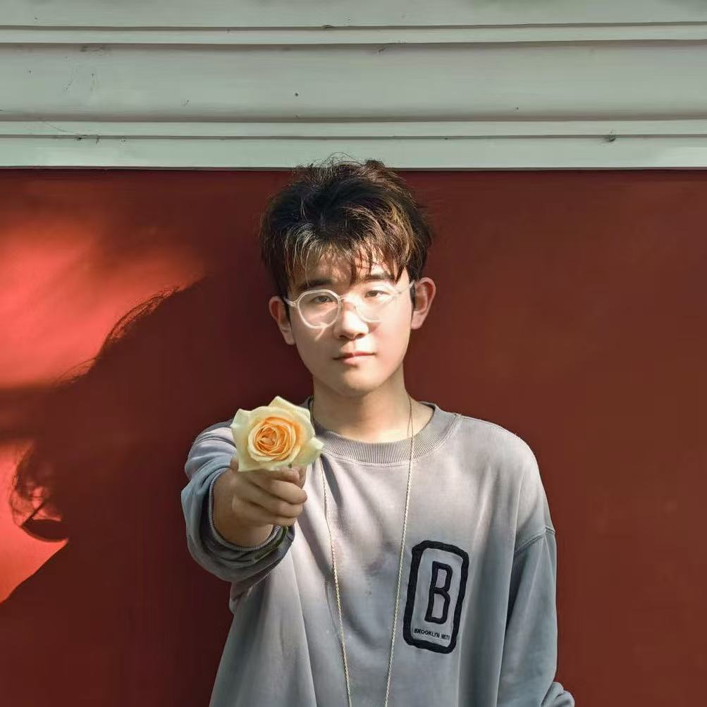
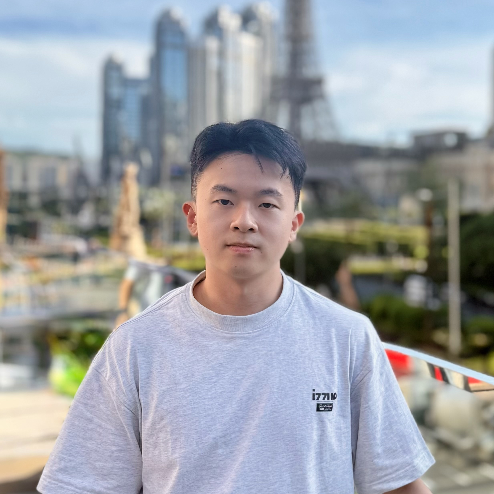
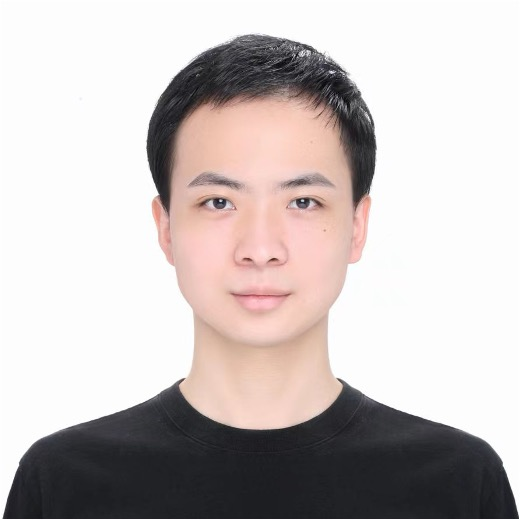
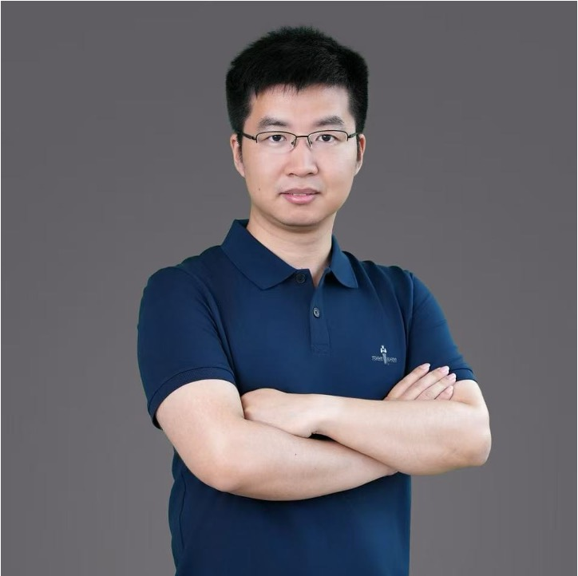
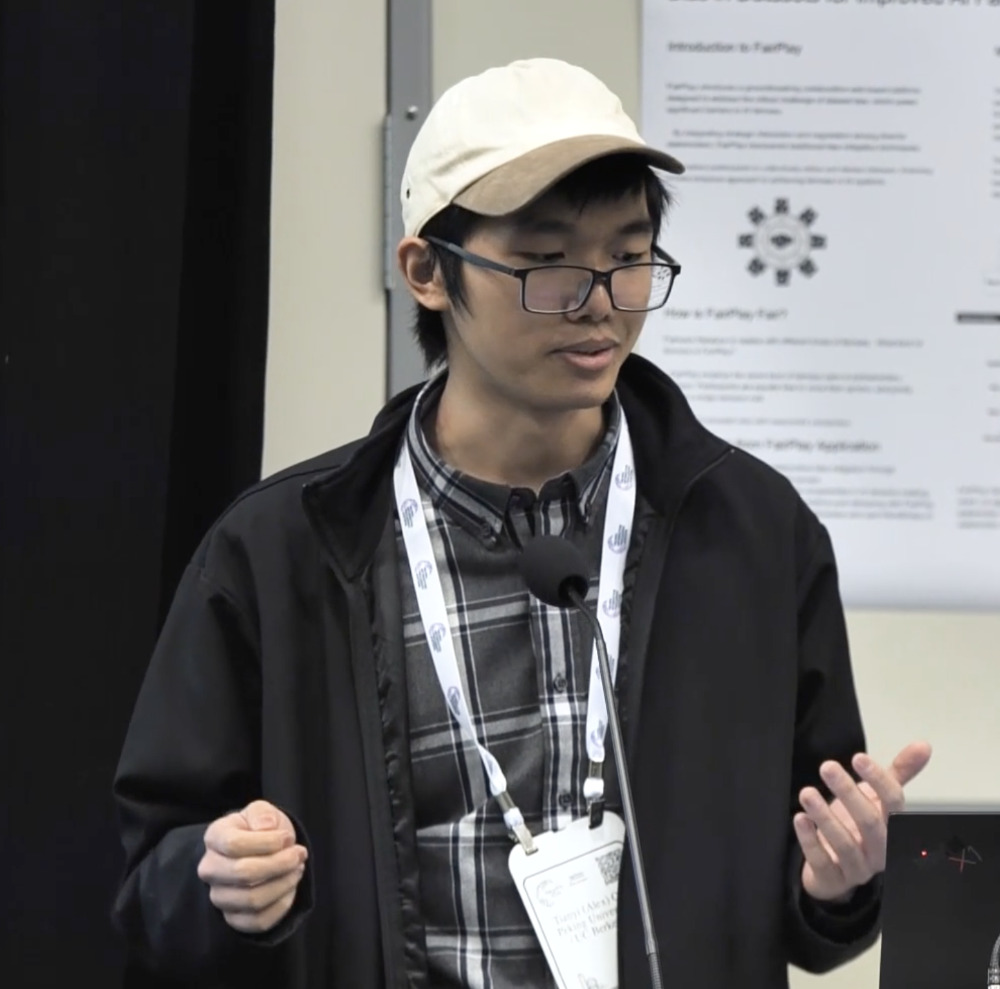
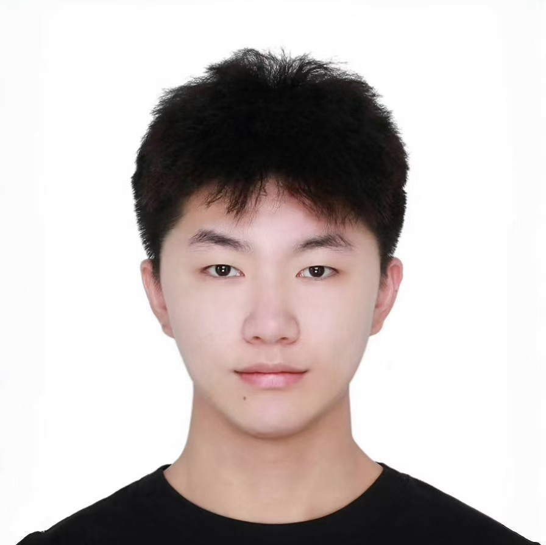

People
-

Tianzhuo YangOrganizer
B.S. (2023), Peking University — Culture Alignment, Reinforcement Learning
My mission is to strive for a principled alignment of AI, to seek its highest purpose in the service of mankind, and to find the pathways that ensure it remains a force for human good—and not to yield.
-
Boyuan ChenOrganizer
Ph.D (2026), Peking University — Reinforcement Learning, Scalable Oversight, Superalignment
Develop scalable oversight and moral alignment mechanisms that integrate theoretical and empirical approaches to ensure ethically grounded, socially responsible intelligence beyond human-level capabilities.
-
Jiaming JiOrganizer
Ph.D (2023), Peking University — Reinforcement Learning, Safety Alignment, AI for Science
I aim to ensure AI systems are safe, aligned, and beneficial by developing principled alignment mechanisms and exploring large model applications in socially impactful domains such as healthcare, education, and science.
-
Ph.D (2024), Peking University — Reinforcement Learning, AI Safety, Preference Modeling
Learning from human feedback is the key to the continuous progress of AI. I am dedicated to providing richer feedback for AI, such as natural language and formal languages, to empower AI alignment and AI safety.
-

MSc (2024), Peking University — Safety Alignment, Safety Evaluation
My research focuses on the safety and capabilities of AI systems. This includes the accurate and scalable evaluation of AI systems, as well as ensuring they align with human intent and values through mechanism design.
-

Ph.D (2025), Peking University — AI Alignment, Embodied AI
Exploring innovative approaches to advance AI research. Dedicated to pushing boundaries in machine learning. Committed to developing robust and ethical AI solutions. Striving to make meaningful contributions to the field.
-
Ph.D (2026), Peking University — Reinforcement Learning, Safety Alignment, LLMs Theory
Exploring innovative approaches to advance AI research. Dedicated to pushing boundaries in machine learning. Committed to developing robust and ethical AI solutions. Striving to make meaningful contributions to the field.
-

Research Assistant, Peking University — Reinforcement Learning, Value Alignment
Exploring innovative approaches to advance AI research. Dedicated to pushing boundaries in machine learning. Committed to developing robust and ethical AI solutions. Striving to make meaningful contributions to the field.
-

Undergraduate, Peking University — Value Alignment, Scalable Oversight, Human-AI Interaction, AI Societal Impact
To facilitate human moral progress with truth-seeking AI. Pervasive AI influence is harming the epistemics of the human-AI collective, and I hope to reverse the trend and turn them into facilitators of collective reflection.
-

Undergraduate, Peking University — AI Alignment, Formal Verification, Mechanistic Interpretability
Supervision signals are fundamental to AI alignment and safety. My research aims to develop scalable, stable, and verifiable supervision through formal verification and mechanistic interpretability, and to leverage reinforcement learning for optimizing the utilization of these signals in frontier AI systems.
-
Undergraduate, Peking University — AI Deception, Reinforcement Learning, Large Language Models
To develop principled and provably safe foundations for intelligent systems, to foster transparent, reliable, and value-aligned AI that can be trusted in high-stakes real-world environments.
-
Research Intern, Nankai University — Reinforcement Learning, AI Infra
Turning scientific vision into engineered reality.
-

Research Intern, University of Electronic Science and Technology of China — Reinforcement Learning, AI Alignment
Devoted to finding and overseeing advanced AI failure modes, aiming to proactively identify and mitigate risks to ensure the safe and reliable development of artificial intelligence.